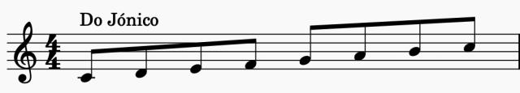
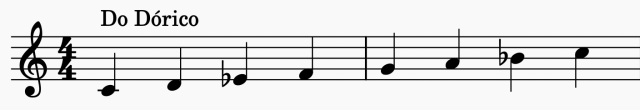
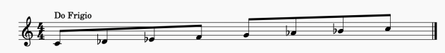
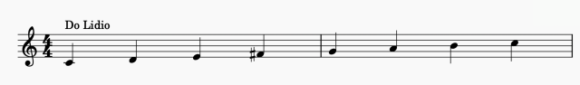
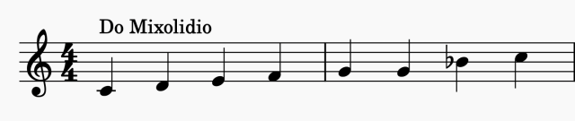
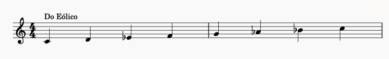

Las escalas modales, modos, modos griegos o modos gregorianos son escalas organizadas de una manera distinta a las escalas mayores o menores (excepto los modos jónico y eólico), aunque su tratamiento es distinto a los de las escalas mayores y menores. Podemos pensarlas como escalas musicales con alteraciones (sostenidos o bemoles) y distintos intervalos con respecto a las escalas mayores y menores. Esas alteraciones le dan otra textura y sonido a la escala. Desde la antigüedad se les ha dotado de características y sentimientos específicos a cada una de ellas, pero eso siempre suele ser algo subjetivo.
MODO JONICO
El modo jónico es un modo mayor, es exactamente igual que la escala mayor natural, se construye con la formula TONO - TONO - SEMITONO - TONO - TONO - TONO - SEMITONO

MODO DORICO
El modo dorico es un modo menor, se construye con la formula TONO - SEMITONO - TONO - TONO - TONO - SEMITONO - TONO

MODO FRIGIO
El modo frigio es un modo menor, se construye con la formula SEMITONO - TONO - TONO - TONO - SEMITONO - TONO - TONO

MODO lidio
El modo lidio es un modo mayor, se construye con la formula TONO - TONO - TONO - SEMITONO - TONO - TONO - SEMITONO

MODO MIXOLIDIO
El modo mixolidio es un modo mayor, se construye con la formula TONO - TONO - SEMITONO - TONO - TONO - SEMITONO - TONO

MODO EOLICO
El modo eolico es un modo menor, se construye con la formula TONO - SEMITONO - TONO - TONO - SEMITONO - TONO - TONO

MODO LOCRIO
El modo locrio es un modo menor, se construye con la formula SEMITONO - TONO - TONO - SEMITONO - TONO - TONO - TONO